第 5 章 线性系统
很少有物理元件真正呈现完全线性的特性。比如弹簧所受的力与弹簧位移之间的关系，总会在某种程度上带有非线性；电阻中的电流与它两端的电压降之间，也会偏离严格的直线关系。不过，只要这些关系在每种情形下都足够接近线性，那么系统行为就会非常接近把元件看成理想线性元件后得到的结果，而分析上的简化又极其巨大，所以只要从工程良知上说得过去，我们就会采用线性假设。
在第 2 章到第 4 章中，我们讨论了如何为动态系统建立并分析微分方程模型。本章把这些结果专门用于线性、时不变的输入输出系统。两个核心概念是矩阵指数和卷积方程。有了它们，我们就能完整刻画线性系统的行为。本章还会介绍输入输出响应的一些性质，并说明如何用线性系统近似一个非线性系统。
5.1 基本定义
前几章的例子里已经出现了不少线性微分方程，比如弹簧质量系统，也就是带阻尼振子，以及在小信号、不饱和输入下工作的运算放大器。更一般地说，许多动态系统都可以用线性微分方程很好地建模。电路是一大类可以有效使用线性模型的系统。在线性模型的其他重要应用中，机械工程尤其常见，例如固体力学和流体力学中，用线性模型描述平衡点附近的小偏差。信号处理系统也提供了许多好例子，包括 CD 和 MP3 播放器中使用的数字滤波器，只是这类系统常常更适合用离散时间模型表示，习题中会进一步讨论。
很多时候，我们会借助反馈来创造具有线性输入输出响应的系统。事实上，哈罗德 S. 布莱克发明负反馈放大器，正是出于追求线性行为的愿望。几乎所有现代信号处理系统，不管是模拟的还是数字的，都会用反馈来产生线性或近似线性的输入输出特性。对这些系统而言，把输入输出特性表示成线性关系，暂时忽略为了得到这种线性响应而需要的内部细节，往往很有用。
另一些系统的非线性则不能忽略，特别是当我们关心系统的全局行为时。捕食者猎物问题就是一个例子：为了捕捉两个相互依赖种群的振荡行为，必须保留非线性耦合项。开关行为和为运动生成周期运动，也是类似例子。不过，如果我们只关心平衡点附近发生了什么，那么通常用局部线性化来近似非线性动态就足够了。第 4.3 节已经简要讨论过这一点。线性化本质上就是在希望研究的工作点附近，对非线性动态作近似。
线性
下面更正式地定义输入输出系统的线性。考虑状态空间系统
其中 \(x\in\mathbb{R}^n\)、\(u\in\mathbb{R}^p\)、\(y\in\mathbb{R}^q\)。和前几章一样，我们通常把讨论限制在单输入单输出情形，也就是取 \(p=q=1\)。我们还假设所有函数都是光滑的，并且对一类合理输入，例如关于时间分段连续的输入，式 (5.1) 的解对所有时间都存在。
假设原点 \(x=0,u=0\) 是系统的平衡点，并且 \(h(0,0)=0\)，会很方便。这个假设并不会失去一般性。为了看清这一点，设 \((x_e,u_e)\ne(0,0)\) 是系统的一个平衡点，对应输出为 \(y_e=h(x_e,u_e)\)。定义新的状态、输入和输出
并把运动方程写成这些变量的形式：
在这组新变量中，原点是输出为 0 的平衡点，因此可以在这组变量中进行分析。得到结果以后，只要用 \(x=\tilde x+x_e\)、\(u=\tilde u+u_e\)、\(y=\tilde y+y_e\) 把它们平移回原坐标即可。
回到原方程 (5.1)，现在不失一般性地假设原点就是我们关心的平衡点。记初始条件 \(x(0)=x_0\)、输入 \(u(t)\) 对应的输出为 \(y(t;x_0,u)\)。在这个记号下，如果系统满足下面条件，就称它是线性输入输出系统：
也就是说，如果输出对初始条件响应，也就是 \(u=0\) 时的响应，以及受迫响应，也就是 \(x(0)=0\) 时的响应，具有联合线性，我们就把系统定义为线性的。性质 (iii) 表达的是叠加原理：线性系统对两个输入 \(u_1\) 和 \(u_2\) 之和的响应，等于分别由这两个输入产生的输出 \(y_1\) 和 \(y_2\) 之和。
线性状态空间系统的一般形式为
其中 \(A\in\mathbb{R}^{n\times n}\)、\(B\in\mathbb{R}^{n\times p}\)、\(C\in\mathbb{R}^{q\times n}\)、\(D\in\mathbb{R}^{q\times p}\)。在单输入单输出的特殊情形下，\(B\) 是列向量，\(C\) 是行向量，\(D\) 是标量。式 (5.3) 是一个以输入 \(u\)、状态 \(x\)、输出 \(y\) 表示的一阶线性微分方程组。容易验证，这组方程的任意解 \(x_1(t)\) 和 \(x_2(t)\) 都满足上面的线性条件。
我们把零输入下的解记作 \(x_h(t)\)，称为齐次解；把零初始条件下的解记作 \(x_p(t)\)，称为一个特解。图 5.1 说明了怎样把这两个单独的解叠加起来，得到完整解。
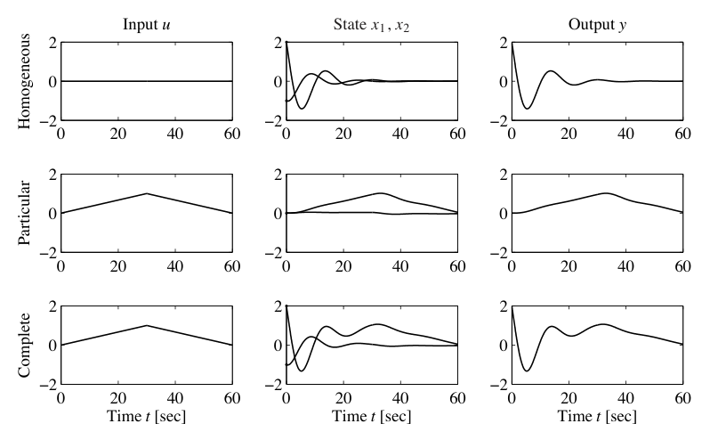
也可以证明，如果一个有限维动态系统按上面所说的意义是输入输出线性的，那么通过适当选择状态变量，它总能表示为式 (5.3) 的状态空间方程。第 5.2 节会给出式 (5.3) 的显式解。这里先用一个简单例子说明它的基本形式。
例 5.1 标量系统
考虑一阶微分方程
初始条件为 \(x(0)=x_0\)。令 \(u_1=A\sin \omega_1 t\)、\(u_2=B\cos \omega_2 t\)。齐次解为
对应于 \(x(0)=0\) 的两个特解为
现在取 \(x(0)=\alpha x_0\)，并令 \(u=u_1+u_2\)。得到的解是各个单独解的加权和：
把式 (5.4) 代回微分方程即可验证。因此，线性系统的性质得到满足。
时不变性
时不变性是描述系统性质不随时间变化的一个重要概念。更精确地说，对时不变系统，如果输入 \(u(t)\) 产生输出 \(y(t)\)，那么把输入施加的时间平移一个常数 \(a\)，输入 \(u(t+a)\) 就会产生输出 \(y(t+a)\)。既线性又时不变的系统通常称为 LTI 系统。它们有一个很有用的性质：对任意输入的响应，可以完全由系统对阶跃输入的响应，或对短脉冲输入的响应来刻画。
为了研究时不变性带来的结果，我们先计算系统对分段常值输入的响应。假设系统初始静止，考虑图 5.2a 所示的分段常值输入。输入在时间 \(t_k\) 处发生跳变，跳变后的值为 \(u(t_k)\)。这个输入可以看成若干阶跃的组合：第一个阶跃发生在 \(t_0\)，幅值为 \(u(t_0)\)；第二个阶跃发生在 \(t_1\)，幅值为 \(u(t_1)-u(t_0)\)，依此类推。
如果系统最初位于平衡点，也就是初始条件响应为零，那么输入响应可以通过叠加若干阶跃输入的响应得到。令 \(H(t)\) 表示在时间 0 施加单位阶跃时的响应。第一个阶跃的响应为 \(H(t-t_0)u(t_0)\)，第二个阶跃的响应为 \(H(t-t_1)(u(t_1)-u(t_0))\)。完整响应为
图 5.2b 给出了这种计算的一个例子。
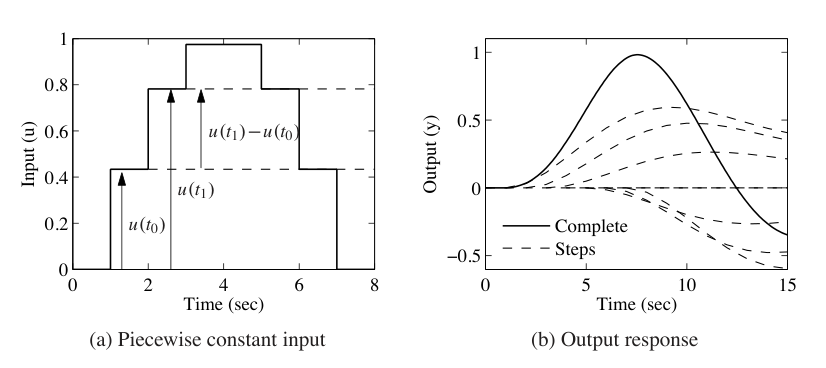
令 \(t_{n+1}-t_n\to0\)，即可得到连续输入信号的响应：
其中 \(H'\) 是阶跃响应的导数，也称为脉冲响应。由此可见，线性时不变系统对任何输入的响应都可以从阶跃响应计算出来。注意，这里的输出只依赖输入，因为我们已经假设系统初始静止，即 \(x(0)=0\)。第 5.3 节会用稍微不同的方式推导式 (5.5)。
5.2 矩阵指数
式 (5.5) 表明，线性系统的输出可以写成输入 \(u(t)\) 的积分。本节和下一节会推导这个公式的更一般版本，把非零初始条件也纳入其中。我们先用矩阵指数研究初始条件响应。
初始条件响应
虽然我们已经说明线性微分方程组的解会定义一个线性输入输出系统，但还没有真正把系统的解算出来。先考虑齐次系统
对标量微分方程
解由指数函数给出：
我们希望把这个结果推广到向量情形，此时 \(A\) 变成矩阵。定义矩阵指数为无穷级数
其中 \(X\in\mathbb{R}^{n\times n}\) 是方阵，\(I\) 是 \(n\times n\) 单位矩阵。我们采用记号
来定义矩阵的幂。式 (5.7) 很容易记住，因为它正是标量指数函数的泰勒级数，只不过把标量换成了矩阵 \(X\)。可以证明，对任意矩阵 \(X\in\mathbb{R}^{n\times n}\)，式 (5.7) 中的级数都收敛，方式与通常指数函数对任意标量 \(a\in\mathbb{R}\) 的定义相同。
在式 (5.7) 中用 \(At\) 代替 \(X\)，其中 \(t\in\mathbb{R}\)，得到
对这个表达式关于 \(t\) 求导，有
右乘 \(x(0)\)，可知 \(x(t)=e^{At}x(0)\) 是微分方程 (5.6) 在初始条件 \(x(0)\) 下的解。我们把这个重要结果概括为一个命题。
命题 5.1 微分方程齐次系统 (5.6) 的解为
注意，这个解的形式与标量方程完全相同，只是必须把向量 \(x(0)\) 放在矩阵 \(e^{At}\) 的右侧。
这个解的形式立刻说明，解对初始条件是线性的。特别地，如果 \(x_{h1}(t)\) 是式 (5.6) 在初始条件 \(x(0)=x_{01}\) 下的解，\(x_{h2}(t)\) 是初始条件 \(x(0)=x_{02}\) 下的解，那么初始条件 \(x(0)=\alpha x_{01}+\beta x_{02}\) 下的解为
对应输出也满足
其中 \(y_{h1}(t)\) 和 \(y_{h2}(t)\) 分别是 \(x_{h1}(t)\) 和 \(x_{h2}(t)\) 对应的输出。
下面用两个例子说明如何计算矩阵指数。
例 5.2 双积分器
一个很简单、也很适合理解基本概念的线性系统，是二阶系统
这个系统称为双积分器，因为输入 \(u\) 需要积分两次才得到输出 \(y\)。
写成状态空间形式，取 \(x=(q,\dot q)\)，有
双积分器的动态矩阵为
直接计算可得 \(A^2=0\)，因此
于是双积分器的齐次解，也就是 \(u=0\) 时的解，为
例 5.3 无阻尼振子
振子的一个简单模型，例如无阻尼弹簧质量系统，为
把系统写成状态空间形式，并取经过适当缩放的状态变量，动态矩阵可以写成
这个 \(e^{At}\) 表达式可以通过求导验证：
解因此为
如果系统带阻尼，
则解更复杂。对欠阻尼情形，令 \(\omega_d=\omega_0\sqrt{1-\zeta^2}\)，矩阵指数可写成
当 \(\zeta\) 的取值使 \(\omega_d\) 为复数时，上式也可以理解为复指数的组合；矩阵指数各项最终仍会给出实数值。
一类重要的线性系统是可以化为对角形式的系统。设系统为
并假设 \(A\) 的所有特征值都互不相同。可以证明，存在可逆矩阵 \(T\)，使得 \(TAT^{-1}\) 为对角矩阵。如果选取新坐标 \(z=Tx\)，则在新坐标中动态为
按照 \(T\) 的构造，这个系统是对角的。
现在考虑对角矩阵 \(A\)，以及相应的 \((At)^k\)，它同样是对角矩阵：
由级数展开可得矩阵指数
当特征值为复数时，可以用块对角矩阵作类似展开，这和第 4.3 节中的做法相似。
若尔当形
有些矩阵虽然有重复特征值，却不能化为对角形式。不过，它们可以变换为一种很接近对角形式的矩阵，称为若尔当形。在这种形式中，动态矩阵的特征值位于对角线上。若有重复特征值，超对角线上可能出现 1，表示状态之间存在耦合。
更具体地说，如果矩阵可以写成
其中
那么称 \(J\) 处于若尔当形。每个矩阵 \(J_i\) 称为一个若尔当块，这个块中的 \(\lambda_i\) 是 \(J\) 的一个特征值。一阶若尔当块可以表示成带反馈 \(\lambda\) 的积分器。更高阶的若尔当块可以表示成这类系统的串联，如图 5.3 所示。
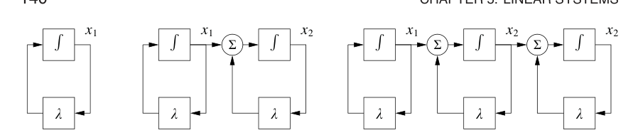
定理 5.2 若尔当分解 任意矩阵 \(A\in\mathbb{R}^{n\times n}\) 都可以变换为若尔当形，若尔当形中的 \(\lambda_i\) 由 \(A\) 的特征值决定。
证明可参见任何标准线性代数教材，例如斯特朗 [187]。特征值互不相同的特殊情形见习题 4.14。
把矩阵转化为若尔当形可能相当复杂，不过 MATLAB 可以用 jordan 函数对数值矩阵进行这种转换。得到的若尔当形结构本身很有意思，因为各个 \(\lambda_i\) 并不要求彼此不同。因此，对同一个特征值，可以存在一个或多个不同大小的若尔当块。
一旦矩阵处于若尔当形，就可以按若尔当块计算它的指数：
这是 \(J\) 的块对角结构直接带来的结果。若尔当块的指数还可以写成
当存在重特征值时，与每个特征值关联的不变子空间对应于矩阵 \(A\) 的若尔当块。注意，\(\lambda\) 可以是复数，此时把矩阵变成若尔当形的变换 \(T\) 也会是复数。当 \(\lambda\) 有非零虚部时，解会包含振荡成分，因为
现在可以用这些结果证明定理 4.1。该定理说，对线性系统而言，平衡点 \(x_e=0\) 渐近稳定，当且仅当所有特征值都满足 \(\operatorname{Re}\lambda_i<0\)。
定理 4.1 的证明 令 \(T\in\mathbb{C}^{n\times n}\) 为一个可逆矩阵，把 \(A\) 变换为若尔当形 \(J=TAT^{-1}\)。使用坐标 \(z=Tx\)，解 \(z(t)\) 可写成
任意解 \(x(t)\) 都能由满足 \(z(0)=Tx(0)\) 的解 \(z(t)\) 表示，因此只要在变换后的坐标中证明定理即可。
解 \(z(t)\) 可由矩阵指数的元素写出。由式 (5.11) 可知，对任意 \(z(0)\)，这些元素全都趋于零，当且仅当 \(\operatorname{Re}\lambda_i<0\)。进一步说，如果某个 \(\lambda_i\) 有正实部，那么存在初始条件 \(z(0)\)，使对应解无界增长。由于这个初始条件可以任意缩小，所以只要存在实部为正的特征值，平衡点就不稳定。
规范形式的存在，使我们可以通过换坐标，把 \(A\) 矩阵变为若尔当形，从而证明线性系统的许多性质。下面命题的证明与定理 4.1 的证明思路相同。
命题 5.3 设系统
没有实部严格为正的特征值，并且有一个或多个实部为零的特征值。那么系统稳定，当且仅当每个实部为零的特征值对应的若尔当块都是标量块，也就是 \(1\times1\) 块。
证明见习题 5.6b。
下面例子说明若尔当形的用法。
例 5.4 矢量推力飞机的线性模型
考虑例 2.9 所描述的矢量推力飞机动态。设 \(u_1=u_2=0\)，则系统动态变为
其中 \(z=(x,y,\theta,\dot x,\dot y,\dot\theta)\)。令速度 \(\dot x,\dot y,\dot\theta\) 为零，并选择剩余变量满足
可得系统平衡点满足 \(z_{3,e}=\theta_e=0\)。这对应飞机的竖直向上姿态。注意，\(x_e\) 和 \(y_e\) 没有被指定，这是因为把系统平移到一个新的竖直位置，仍然会得到平衡点。
为计算平衡点的稳定性，使用式 (4.11) 计算线性化：
系统特征值为
并非所有特征值都具有严格负实部，因此线性化系统不是渐近稳定的。
为了判断系统是否按李雅普诺夫意义稳定，必须使用若尔当形。可以证明，\(A\) 的若尔当形为
由于第二个若尔当块的特征值为 0，并且不是简单特征值，线性化系统不稳定。
特征值与模态
系统的特征值和特征向量提供了一种描述系统可能行为的方式。对振荡系统，模态一词常用来描述可能出现的振动形态。图 5.4 说明了由两个质量块和弹簧构成的系统的模态。一种形态是两个质量块同步向左和向右振荡，另一种形态是它们彼此靠近和远离。
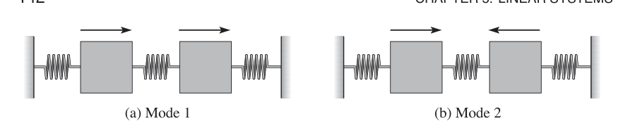
线性系统的初始条件响应可以写成包含动态矩阵 \(A\) 的矩阵指数。因此，矩阵 \(A\) 的性质决定了系统的行为。给定矩阵 \(A\in\mathbb{R}^{n\times n}\)，回忆如果
则称 \(v\) 是 \(A\) 的特征向量，\(\lambda\) 是对应特征值。一般来说，\(\lambda\) 和 \(v\) 可以是复数。不过，如果 \(A\) 是实矩阵，则任何特征值 \(\lambda\) 的复共轭 \(\bar\lambda\) 也是特征值，对应特征向量为 \(\bar v\)。
先假设 \(\lambda\) 和 \(v\) 是实特征值和实特征向量。如果考察初始条件 \(x(0)=v\) 下的微分方程解，由矩阵指数定义可知
因此，解始终位于由特征向量张成的子空间中。特征值 \(\lambda\) 描述解随时间如何变化，这个解常称为系统的一个模态。文献中也常把模态一词用于指特征值，而不是解本身。
若考察向量 \(x\) 和 \(v\) 的各个分量，则有
所以，对一个实模态而言，状态 \(x\) 各分量之间的比例保持为常数。特征向量给出了这个解的形状，因此也称为系统的模态形状。图 5.5 显示了一个二阶系统的模态，其中包括一个快模态和一个慢模态。注意，慢模态下状态变量符号相同，快模态下状态变量符号相反。
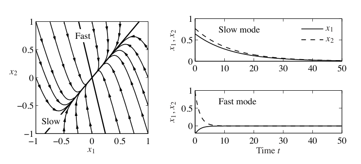
当 \(A\) 的特征值为复数时，情形稍微复杂一些。由于 \(A\) 的元素为实数，特征值和特征向量成共轭对：
这意味着
利用矩阵指数，有
因此
初始条件若位于由特征向量实部 \(u\) 和虚部 \(w\) 张成的子空间中，解就会一直留在这个子空间中。解是一条由 \(\sigma\) 和 \(\omega\) 决定的对数螺旋。我们同样把对应于 \(\lambda\) 的解称为系统的一个模态，把 \(v\) 称为模态形状。
如果矩阵 \(A\) 有 \(n\) 个互不相同的特征值 \(\lambda_1,\ldots,\lambda_n\)，则初始条件响应可以写成模态的线性组合。为简化说明，假设所有特征值都是实数，对应单位特征向量为 \(v_1,\ldots,v_n\)。由线性代数可知，这些特征向量线性无关，因此可以把初始条件写成
利用线性性，初始条件响应为
也就是说，响应是系统模态的线性组合，各个模态的幅值按 \(e^{\lambda_it}\) 增长或衰减。互异复特征值的情形也类似。非互异特征值的情形更细致，需要使用前一节讨论的若尔当形。
例 5.5 耦合弹簧质量系统
考虑图 5.4 所示的弹簧质量系统。系统运动方程为
写成状态空间形式，定义状态 \(x=(q_1,q_2,\dot q_1,\dot q_2)\)，可得
现在定义变换 \(z=Tx\)，把系统化为更简单的形式。令
于是
在新坐标中，动态变为
我们看到，系统处于块对角形式，也称为模态形式。
在 \(z\) 坐标中，状态 \(z_1,z_2\) 参数化一个模态，其特征值约为
状态 \(z_3,z_4\) 参数化另一个模态，其特征值约为
从变换 \(T\) 的形式可以看出，这些模态正对应图 5.4 中的两个模态，其中 \(q_1\) 与 \(q_2\) 要么同向运动，要么反向运动。特征值的实部和虚部分别给出每个模态的衰减率 \(\sigma\) 与频率 \(\omega\)。
5.3 输入输出响应
上一节说明了如何用矩阵指数计算初始条件响应。本节推导卷积方程，把输入和输出也纳入其中。
卷积方程
回到式 (5.3) 中的一般输入输出情形。这里把它重写为
利用矩阵指数，式 (5.13) 的解可以写成下面形式。
定理 5.4 线性微分方程 (5.13) 的解为
证明方法是对等式两边求导，并使用矩阵指数性质 (5.8)。这样得到
从而证明了结论。注意，这个计算本质上与证明一阶方程结果时相同。
由式 (5.13) 和式 (5.14) 可知，线性系统的输入输出关系为
从这个方程很容易看出，输出对初始条件和输入都是联合线性的，这来自矩阵向量乘法与积分的线性性。
式 (5.15) 称为卷积方程，它表示耦合线性微分方程组解的一般形式。我们立刻看到，由矩阵 \(A\) 刻画的系统动态，在系统稳定性和性能中都起到关键作用。矩阵指数同时描述两件事：扰动初始条件时会发生什么，以及系统如何响应输入。
也可以用系统脉冲响应的概念解释卷积方程。考虑施加如下输入信号：
这个信号是持续时间为 \(\epsilon\)、幅值为 \(1/\epsilon\) 的脉冲，如图 5.6a 所示。定义冲激 \(\delta(t)\) 为当 \(\epsilon\to0\) 时这个信号的极限：
这个信号有时称为 delta 函数。它无法在物理上真正实现，但为理解系统响应提供了一个方便抽象。注意，冲激的积分为 1：
特别是，在任意短的时间区间内对冲激积分，结果都是 1。
把系统的脉冲响应 \(h(t)\) 定义为以冲激作为输入时的输出：
第二个等式来自 \(\delta(t)\) 除原点外处处为零，并且它的积分恒等于 1。于是可以用初始条件响应、脉冲响应与输入信号的卷积，以及直接项来写卷积方程：
习题 5.2 会探讨这个方程的一种解释：线性系统的响应可以看成无限多个移位冲激响应的叠加，而这些冲激的大小由输入 \(u(t)\) 给出。这本质上也是分析图 5.2 并推导式 (5.5) 时所用的论证。注意，式 (5.19) 中第二项与式 (5.5) 相同，并且可以证明脉冲响应在形式上等价于阶跃响应的导数。
用脉冲近似冲激函数，还提供了一种从数据识别系统动态的办法。图 5.6b 显示了一个系统在不同脉冲宽度下的脉冲响应。注意，当脉冲宽度趋于零时，脉冲响应逼近冲激响应。一般来说，如果稳定系统最快特征值的实部为 \(-\sigma_{\max}\)，那么当 \(\epsilon\sigma_{\max}\ll1\) 时，长度为 \(\epsilon\) 的脉冲可以很好估计脉冲响应。在图 5.6 中，脉冲宽度 \(\epsilon=1\) s 给出 \(\epsilon\sigma_{\max}=0.62\)，此时脉冲响应已经接近冲激响应。
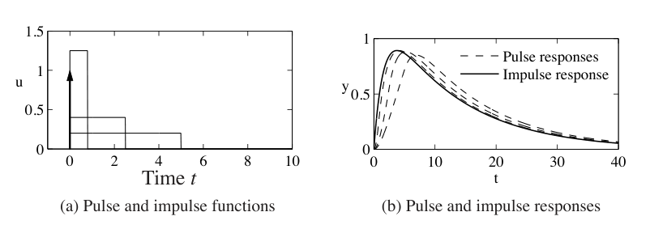
坐标不变性
输入向量 \(u\) 和输出向量 \(y\) 的分量由模型选取的输入和输出决定，但状态变量取决于表示状态时选择的坐标系。坐标选择会影响模型中矩阵 \(A,B,C\) 的值。直接项 \(D\) 不受影响，因为它直接把输入映射到输出。下面考察改变坐标系的一些后果。
引入新坐标 \(z=Tx\)，其中 \(T\) 是可逆矩阵。由式 (5.3) 可得
变换后的系统与式 (5.3) 有相同形式，但矩阵 \(A,B,C\) 变为
常常存在一些特殊坐标，可以让系统的某个性质变得更清楚。因此，坐标变换可以帮助我们获得关于动态的新认识。
还可以比较变换坐标中的解和原状态坐标中的解。这里用到指数映射的一个重要性质：
这个性质可以直接代入矩阵指数定义验证。利用它可得
从这个形式可以看出，如果能够把 \(A\) 变换成某个矩阵指数容易计算的形式 \(\tilde A\)，就可以先在变换后的坐标中求解，再通过简单矩阵乘法得到原状态 \(x\) 的一般卷积方程解。下面例子说明了这种技术。
例 5.6 耦合弹簧质量系统
考虑图 5.7 所示的耦合弹簧质量系统。该系统的输入是最右侧弹簧端点的正弦运动，输出是两个质量块的位置 \(q_1\) 和 \(q_2\)。运动方程为
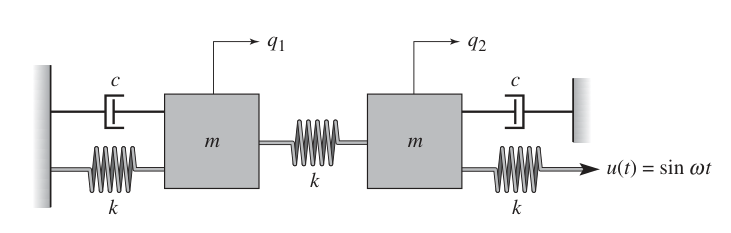
写成状态空间形式，定义状态 \(x=(q_1,q_2,\dot q_1,\dot q_2)\)，有
这是四个微分方程耦合而成的系统，直接写出解析解会相当复杂。
动态矩阵与例 5.5 相同，因此可以使用那里定义的坐标变换，把系统写成模态形式：
注意，得到的矩阵方程是块对角的，因此已经解耦。我们可以分别求解由状态 \((z_1,z_2)\) 和 \((z_3,z_4)\) 表示的两个二阶系统。事实上，每组方程的函数形式都与单个弹簧质量系统相同。第 6.3 节会推导显式解。
求出这两个独立二阶方程的解以后，可以反转状态变换，写成 \(x=T^{-1}z\)，从而恢复原坐标中的动态。我们还可以通过查看两个独立二阶系统的稳定性来判断整个系统的稳定性。
稳态响应
给定线性输入输出系统
式 (5.21) 解的一般形式由卷积方程给出：
从这个方程形式可见，解由初始条件响应和输入响应构成。
输入响应对应上式最后两项，它本身又包含两个部分：暂态响应和稳态响应。暂态响应发生在输入刚施加后的最初一段时间，反映初始条件与稳态解之间的不匹配。稳态响应是输出响应中反映系统在给定输入下长期行为的部分。对周期输入而言，稳态响应往往也是周期的；对常值输入而言，稳态响应往往是常值。图 5.8 展示了周期输入下的暂态响应与稳态响应。
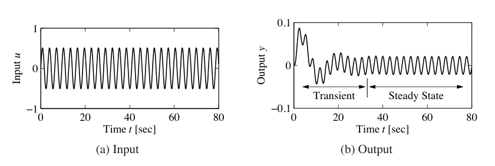
一种特别常见的输入是阶跃输入，它表示输入从一个值突然变为另一个值。单位阶跃，有时也称为 Heaviside 阶跃函数，定义为
系统 (5.21) 的阶跃响应定义为：从零初始条件，或从相应平衡点出发，在阶跃输入作用下得到的输出 \(y(t)\)。阶跃输入是不连续的，因此实际中无法严格实现。不过，它是研究输入输出系统时广泛使用的便利抽象。
可以用卷积方程计算线性系统的阶跃响应。令 \(x(0)=0\)，并使用上面对阶跃输入的定义，有
如果 \(A\) 的所有特征值都具有负实部，也就是在无输入时原点稳定，那么可把解写为
第一项是暂态响应，随着 \(t\to\infty\) 衰减到零。第二项是稳态响应，表示长时间后的输出值。
图 5.9 显示了一个典型阶跃响应。描述阶跃响应时有几个常用术语。阶跃响应的稳态值 \(y_{\mathrm{ss}}\) 是输出最终达到的水平，前提是输出收敛。上升时间 \(T_r\) 是信号从最终值的 10% 上升到 90% 所需的时间。也可以选用其他百分比界限，但本书除非另有说明，均采用这两个比例。超调量 \(M_p\) 是信号最初超过最终值的百分比。这个定义通常假设后续信号不会比最初暂态超出最终值更多，否则这个术语会变得有歧义。最后，调节时间 \(T_s\) 是信号进入并在之后一直保持在最终值 2% 范围内所需的时间。调节时间有时也按 1% 或 5% 定义，见习题 5.7。一般来说，这些性能量可以依赖阶跃输入的幅值；但对线性系统，上面定义的后三个量与阶跃大小无关。
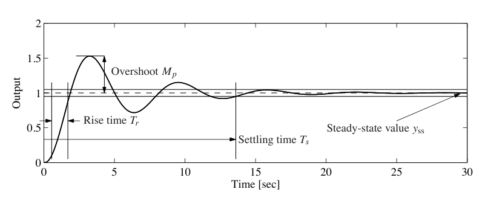
例 5.7 隔室模型
考虑图 5.10 所示并在第 3.6 节详细描述的隔室模型。假设药物通过隔室 \(V_1\) 中的恒定输注给入，并且药物在隔室 \(V_2\) 中发挥作用。为了评估隔室中浓度到达稳态的速度，计算阶跃响应，如图 5.10b 所示。这个阶跃响应很慢，调节时间为 39 min。若在最初采用更高的注入速率，就能更快达到稳态浓度，如图 5.10c 所示。此时系统响应可以通过组合两个阶跃响应来计算，见习题 5.3。
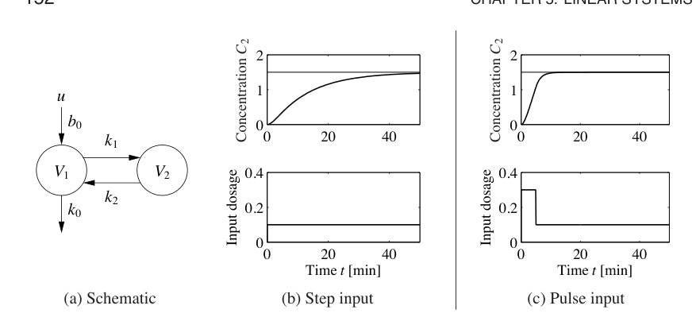
线性系统的另一种常见输入是正弦信号，或若干正弦信号的组合。输入输出系统的频率响应度量系统如何响应某个输入端上的正弦激励。正如我们已经在标量系统中看到的，与正弦激励相关的特解本身也是同一频率的正弦。因此可以比较输出正弦与输入正弦的幅值和相位。更一般地说，只要系统在某个正弦输入下的输出响应也是同频率正弦，就可以谈论系统的频率响应。
为了更详细地说明，需要在 \(u=\cos\omega t\) 时计算卷积方程 (5.15)。直接计算相当繁琐，但可以利用系统线性性简化推导。注意
由于系统是线性的，只需先计算系统对复输入 \(u(t)=e^{st}\) 的响应，再把 \(s=i\omega\) 和 \(s=-i\omega\) 对应的响应平均，就能重构正弦输入的响应。
对输入 \(u=e^{st}\) 应用卷积方程，得到
如果 \(A\) 的特征值都不等于 \(s=\pm i\omega\)，则矩阵 \(sI-A\) 可逆，并且
于是得到
注意，解再次由暂态分量和稳态分量构成。如果系统渐近稳定，暂态分量会衰减到零，而稳态分量与复输入 \(u=e^{st}\) 成比例。
可以进一步把稳态响应写成
其中
\(M\) 和 \(\theta\) 分别表示复数 \(C(sI-A)^{-1}B+D\) 的幅值与相位。当 \(s=i\omega\) 时，称 \(M\) 为系统在该激励频率 \(\omega\) 下的增益，称 \(\theta\) 为相位。利用线性性并组合 \(s=+i\omega\) 与 \(s=-i\omega\) 的解，可以说明如果输入为 \(u=A_u\sin(\omega t+\phi)\)，输出为 \(y=A_y\sin(\omega t+\psi)\)，那么
对正弦输入 \(u=\cos\omega t\)，稳态解为
若相位 \(\theta\) 为正，就说输出超前输入；否则说输出滞后输入。
图 5.11a 展示了一个正弦响应示例。虚线是幅值为 1 的输入正弦，实线是输出正弦，它具有不同幅值并且相位发生偏移。增益是两个正弦幅值之比，可以通过测量峰值高度得到。相位通过比较输入和输出过零点之间的时间差与正弦周期之比得到：
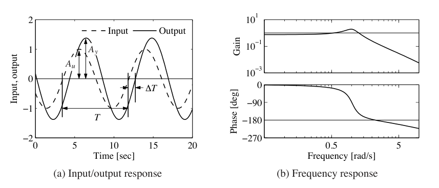
观察频率响应的一种方便方式，是画出式 (5.24) 中增益和相位如何随 \(\omega\) 变化，其中 \(s=i\omega\)。图 5.11b 给出了这种表示的例子。
例 5.8 有源带通滤波器
考虑图 5.12a 所示的运算放大器电路。可以通过写出节点方程来推导系统动态。节点方程表达的是任意节点处电流之和必须为零。像第 3.3 节中一样，假设 \(v_-=v_+=0\)，则有
选择 \(v_2\) 和 \(v_3\) 为状态，并使用第一和第三个方程，得到
写成线性状态空间形式：
其中 \(x=(v_2,v_3)\)、\(u=v_1\)、\(y=v_3\)。
系统的频率响应可以用式 (5.24) 计算：
图 5.12b 画出了 \(R_1=100\,\Omega\)、\(R_2=5\,\mathrm{k}\Omega\)、\(C_1=C_2=100\,\mu\mathrm{F}\) 时的幅值和相位。可以看到，该电路会让约 10 rad/s 的信号通过，但会衰减低于 5 rad/s 和高于 50 rad/s 的频率。在 0.1 rad/s 时，输入信号衰减 20 倍，变为 0.05。这类电路称为带通滤波器，因为它让 5 到 50 rad/s 这个频带内的信号通过。
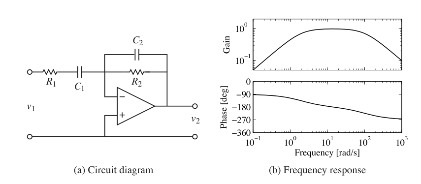
和阶跃响应一样，频率响应也有若干标准性质。系统在 \(\omega=0\) 处的增益称为零频增益，它对应常值输入与稳态输出之间的比值：
只有当 \(A\) 可逆时，零频增益才有良好定义，特别是 \(A\) 不能在 0 处有特征值。还应注意，零频增益只有在系统关于对应平衡点稳定时才有意义。因此，如果施加常值输入 \(u=r\)，对应平衡点 \(x_e=-A^{-1}Br\) 必须稳定，我们才能谈零频增益。在电气工程中，零频增益常称为直流增益。DC 表示直流电，反映了电气工程中常把信号分成直流项，也就是零频项，以及交流项的习惯。
系统的带宽 \(\omega_b\) 是增益相对参考值下降不超过 \(1/\sqrt{2}\) 的频率范围。对零频增益非零且有限的系统，带宽是增益相对零频增益下降到 \(1/\sqrt{2}\) 时的频率。对衰减低频、通过高频的系统，参考增益取为高频增益。对例 5.8 中那样的带通滤波器，带宽定义为增益大于频带中心增益的 \(1/\sqrt{2}\) 的频率范围。对例 5.8 而言，这给出约 50 rad/s 的带宽。
频率响应的另一个重要性质是谐振峰值 \(M_r\)，即频率响应的最大值；以及峰值频率 \(\omega_{mr}\)，即最大值出现的频率。这两个性质描述了哪一频率的正弦输入会产生最大可能输出，以及该频率处的增益。
例 5.9 接触模式下的原子力显微镜
考虑第 3.5 节中讨论的接触模式原子力显微镜竖直动态模型。基本动态由式 (3.23) 给出。压电堆可以建模为二阶系统，其无阻尼固有频率为 \(\omega_3\)，阻尼比为 \(\zeta_3\)。系统动态由下面线性系统描述：
输入信号是施加给放大器的驱动信号，输出是压电元件的伸长量。系统的频率响应如图 5.13b 所示。系统的零频增益为 \(M_0=1\)。有两个谐振峰：\(M_{r1}=2.12\)，出现在 \(\omega_{mr1}=238\) krad/s；\(M_{r2}=4.29\)，出现在 \(\omega_{mr2}=746\) krad/s。带宽按增益第一次比零频增益低 \(1/\sqrt{2}\) 的频率定义，为 \(\omega_b=292\) krad/s。系统还在 \(\omega_{md}=268\) krad/s 处有一个增益谷值 \(M_d=0.556\)。这个谷值称为反谐振，它伴随相位下降，并会限制简单控制器下的性能。第 10 章会看到这一点。
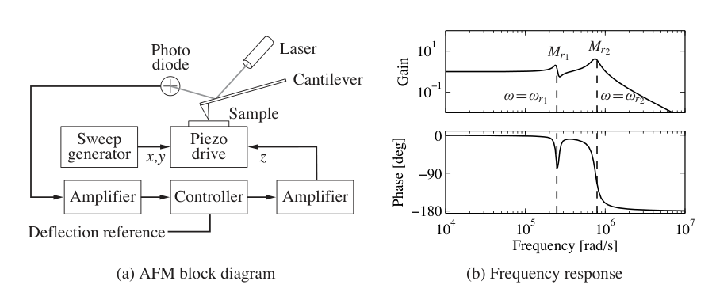
采样
在建模和控制中，同时使用微分方程和差分方程常常很方便。对线性系统而言，从一种表示转换到另一种表示很直接。考虑式 (5.13) 所描述的一般线性系统，并假设控制信号在长度为 \(h\) 的采样区间内保持常值。由定理 5.4 的式 (5.14) 可知
其中假设这个不连续控制信号从右连续。系统在采样时刻 \(t=kh\) 的行为由差分方程描述：
注意，差分方程 (5.27) 精确表示了系统在采样时刻的行为。如果控制信号在采样区间内是线性的，也可以得到类似表达式。
从 (5.26) 到 (5.27) 的变换称为采样。连续表示和采样表示中的系统矩阵关系为
注意，如果 \(A\) 可逆，则
所有连续时间系统都可以采样得到一个离散时间版本，但有些离散时间系统没有连续时间等价形式。精确条件是矩阵 \(\Phi\) 不能在负实轴上有实特征值。
例 5.10 IBM Lotus 服务器
例 2.4 描述了怎样把 IBM Lotus 服务器动态建成离散时间系统
其中 \(a=0.43\)、\(b=0.47\)，采样周期为 \(h=60\) s。如果希望基于连续时间理论设计控制系统，就需要一个微分方程模型。利用式 (5.28) 可得
因此，这个差分方程可以解释为下面普通微分方程的采样版本：
5.4 线性化
正如本章开头所说，线性系统模型的一个常见来源，是用线性系统近似非线性系统。这些近似用于研究系统的局部行为，在那里非线性效应预计较小。本节讨论如何用线性化在局部近似一个系统，以及这种近似能对稳定性说明什么。我们从第 3 章的巡航控制例子开始说明基本概念。
例 5.11 巡航控制
巡航控制系统的动态在第 3.1 节已经推导，形式为
其中右端第一项是发动机产生的力，其余三项分别是滚动摩擦力、空气阻力和由坡度引起的重力扰动力。当发动机施加的力与扰动力平衡时，存在平衡点 \((v_e,u_e)\)。
为了研究系统在平衡点附近的行为，对系统作线性化。将式 (5.29) 在平衡点附近作泰勒级数展开，得到
其中
注意，如果 \(v\ne0\)，滚动摩擦对应的项在局部线性化中消失。对一辆四挡行驶、\(v_e=25\) m/s、\(\theta_e=0\) 的汽车，采用第 3.1 节中的数值参数，平衡油门为 \(u_e=0.1687\)，参数为 \(a=-0.0101\)、\(b=1.32\)、\(b_g=9.8\)。这个线性模型描述了速度围绕标称速度的小扰动如何随时间演化。
图 5.14 显示了线性模型和非线性模型下巡航控制器的仿真。两者之间差别很小，因此线性化模型提供了合理近似。
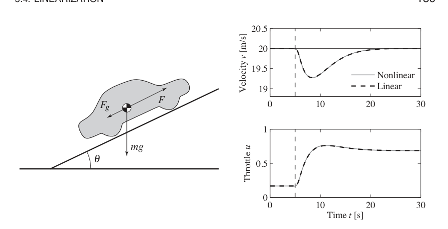
平衡点附近的雅可比线性化
更正式地说，考虑单输入单输出非线性系统
该系统在 \(x=x_e,u=u_e\) 处有平衡点。不失一般性可以假设 \(x_e=0,u_e=0\)，不过为了明确展示坐标平移，先讨论一般情形。
为了研究系统在平衡点 \((x_e,u_e)\) 附近的局部行为，假设 \(x-x_e\) 和 \(u-u_e\) 都很小，使得平衡点附近的非线性扰动相对于低阶线性项可以忽略。这与小角度近似所用的论证大体相同，也就是当 \(\theta\) 接近零时，用 \(\theta\) 替代 \(\sin\theta\)，用 1 替代 \(\cos\theta\)。
像第 4 章中一样，定义新的状态变量 \(z\)，以及输入 \(v\) 和输出 \(w\)：
当系统靠近平衡点时，这些变量都接近零。因此在这些变量中，非线性项可以看成相关向量场泰勒级数展开中的高阶项。这里暂时假设这些泰勒展开存在。
形式上，非线性系统 (5.32) 的雅可比线性化为
其中
当系统靠近线性化所围绕的平衡点时，系统 (5.33) 近似原系统 (5.32)。由定理 4.3 可知，如果线性化系统渐近稳定，那么完整非线性系统的平衡点 \(x_e\) 局部渐近稳定。
需要特别注意，只有在平衡点附近才能定义这里意义下的线性化。为了看清这一点，考虑多项式系统
其中 \(a_0\ne0\)。系统的平衡点集合为
可以围绕其中任意一个平衡点线性化。假设我们试图围绕系统原点 \(x=0,u=0\) 线性化。若丢弃 \(x\) 的高阶项，会得到
但这在 \(a_0\ne0\) 时并不是式 (5.33) 意义下的雅可比线性化。常数项必须保留，而它并不出现在式 (5.33) 中。进一步说，即使在近似模型中保留常数项，系统也会很快离开这一点，因为它受到常数项 \(a_0\) 的驱动，所以近似可能很快失效。
建模和仿真软件通常提供符号或数值线性化功能。MATLAB 命令 trim 用于寻找平衡点，linmod 用于从 SIMULINK 系统中围绕某个工作点提取线性状态空间模型。
例 5.12 车辆转向
考虑例 2.8 中引入的车辆转向系统。系统的非线性运动方程由式 (2.23) 到式 (2.25) 给出，可写成
其中 \(x,y,\theta\) 是车辆质心的位置和朝向，\(v_0\) 是后轮速度，\(b\) 是前后轮之间的距离，\(\delta\) 是前轮角度。函数 \(\alpha(\delta)\) 表示速度向量与车辆纵轴之间的夹角。
我们关心车辆在直线路径 \(\theta=\theta_0\) 附近、固定速度 \(v_0\ne0\) 下的运动。为了找到相关平衡点，先令 \(\dot\theta=0\)，可见必须有 \(\delta=0\)，也就是方向盘回正。这也给出 \(\alpha=0\)。再看动态中的前两个方程，由于 \(\dot x^2+\dot y^2=v_0^2\ne0\)，车辆在 \(xy\) 方向的运动按定义并不处于平衡。因此不能对完整模型作形式上的线性化。
转而假设我们只关心车辆相对直线的横向偏差。为简化起见，令 \(\theta_e=0\)，对应沿 \(x\) 轴行驶。于是可以集中研究 \(y\) 和 \(\theta\) 方向的运动方程。稍微滥用记号，引入状态 \(x=(y,\theta)\)，并令 \(u=\delta\)。系统于是处于标准形式，其中
我们关心的平衡点为 \(x=(0,0)\)、\(u=0\)。为了计算这个平衡点附近的线性化模型，使用公式 (5.34)。直接计算得到
因此线性化系统
为原非线性动态提供了一个近似。
线性化模型还可以通过引入归一化变量进一步简化，方式见第 2.3 节。对这个系统，选取轴距 \(b\) 作为长度单位，选取车辆行驶一个轴距所需的时间作为时间单位。归一化状态为 \(z=(x_1/b,x_2)\)，新时间变量为 \(\tau=v_0t/b\)。模型 (5.35) 变为
其中 \(\gamma=a/b\)。具有无滑移车轮的车辆转向归一化线性模型因此只含一个参数。
反馈线性化
另一种线性化方法是使用反馈，把非线性系统动态转化为线性系统动态。下面用一个例子说明基本思想。
例 5.13 巡航控制
再次考虑例 5.11 中的巡航控制系统，其动态见式 (5.29)：
如果把 \(u\) 选为如下反馈律
则得到的动态为
其中 \(d=-mg\sin\theta\) 是由道路坡度引起的扰动力。如果现在为 \(u'\) 定义反馈律，例如比例积分微分控制器，也就是 PID 控制器，就可以用式 (5.37) 计算最终应命令的输入。
式 (5.38) 是线性微分方程。我们实际上通过反馈律 (5.37) 反转了非线性。这要求能够准确测量车速 \(v\)，并且拥有关于发动机转矩特性、传动比、阻力和摩擦特性以及车辆质量的准确模型。这样的模型通常并不完全可得，而且参数值也可能变化。不过，如果为 \(u'\) 设计一个好的反馈律，就可以对这些不确定性获得鲁棒性。
更一般地说，对形如
的系统，如果能够找到控制律 \(u=\alpha(x,v)\)，使得到的闭环系统以 \(v\) 为输入、以 \(y\) 为输出时具有输入输出线性性，如图 5.15 所示，就称这个系统可反馈线性化。完整刻画这类系统超出了本书范围。不过需要指出，除改变输入之外，一般理论还允许对描述系统所用的状态作非线性变换，同时保持输入和输出变量固定。这个过程的更多细节可参见伊西多里 [106] 和哈利勒 [123] 的教材。
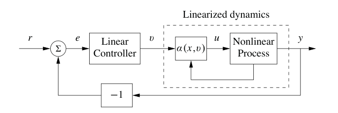
一种相当常见、值得特别提及的情形，是下面形式的机械系统：
这里 \(q\in\mathbb{R}^n\) 是机械系统的构型，\(M(q)\in\mathbb{R}^{n\times n}\) 是依赖构型的惯性矩阵，\(C(q,\dot q)\in\mathbb{R}^n\) 表示科里奥利力以及其他非线性力，例如刚度和摩擦，\(B(q)\in\mathbb{R}^{n\times p}\) 是输入矩阵。如果 \(p=n\)，也就是输入数与构型变量数相同，并且 \(B(q)\) 对所有构型 \(q\) 都可逆，则可以选取
得到的动态为
这是线性系统。现在可以用线性系统理论的工具分析线性化系统并设计控制律，同时记得应用式 (5.39) 得到真正施加到系统上的输入。
这种控制在机器人学中很常见，称为计算力矩控制；在飞行器飞行控制中称为动态逆。一些建模工具，例如 Modelica，可以自动生成逆模型代码。需要提醒的是，反馈线性化常常会抵消自然动态中原本有益的项，因此必须谨慎使用。不要求完全抵消非线性的扩展方法可参见哈利勒 [123] 以及 Krstić 等 [129]。
5.5 延伸阅读
本章大部分内容都属于经典材料，可以在大多数动态学和控制理论教材中找到，包括詹姆斯、尼科尔斯和菲利普斯 [110] 等早期控制著作，也包括多夫和毕晓普 [61]、富兰克林、鲍威尔和埃马米-奈尼 [79]、小畑 [162] 等较新的教材。布罗凯特 [44] 的书对基于矩阵指数的线性系统给出了极佳讲述，拉夫 [171] 提供了更全面的处理，桑塔格 [182] 给出了优雅的数学表述。反馈线性化材料可见于伊西多里 [106] 和哈利勒 [123] 等非线性控制教材。
通过考察阶跃输入响应来刻画动态的思想来自亥维赛。他还引入了用于分析线性系统的算子演算。因此，单位阶跃也称为 Heaviside 阶跃函数。线性系统分析因此大大简化，但亥维赛的工作曾因缺少数学严格性而受到猛烈批评，这一点可见纳欣 [157] 的传记。后来，数学家洛朗 施瓦茨在 20 世纪 40 年代末发展了分布理论，解决了这些困难。在工程中，线性系统传统上常用拉普拉斯变换分析，见加德纳和巴恩斯 [81]。矩阵指数的使用始于 20 世纪 60 年代控制理论的发展，并受到扎德和德索尔 [207] 教材的强烈推动。当强大的数值线性代数方法被打包进 LabVIEW、MATLAB 和 Mathematica 这类程序后，矩阵技术迅速扩展。
习题
5.1 信号导数的响应。证明：如果 \(y(t)\) 是线性系统对输入 \(u(t)\) 的输出，那么系统对输入 \(\dot u(t)\) 的输出为 \(\dot y(t)\)。提示：使用导数定义
5.2 脉冲响应与卷积。证明信号 \(u(t)\) 可以用冲激函数 \(\delta(t)\) 分解为
利用这个分解以及叠加原理，证明线性系统在零初始条件下对输入 \(u(t)\) 的响应可以写成
其中 \(h(t)\) 是系统的脉冲响应。
5.3 隔室模型的脉冲响应。考虑例 5.7 中的隔室模型。计算系统阶跃响应，并与图 5.10b 比较。利用叠加原理计算图 5.10c 所示脉冲输入下的响应。
5.4 二阶系统的矩阵指数。假设 \(\zeta<1\)，并令 \(\omega_d=\omega_0\sqrt{1-\zeta^2}\)。证明
5.5 线性系统的李雅普诺夫函数。考虑线性系统 \(\dot x=Ax\)，并假设矩阵 \(A\) 的所有特征值 \(\lambda_j\) 都满足 \(\operatorname{Re}\lambda_j<0\)。证明矩阵
定义了形如 \(V(x)=x^TPx\) 的李雅普诺夫函数。
5.6 非对角若尔当形。考虑一个若尔当形非对角的线性系统。
(a) 证明存在一个周期输入，它不会产生周期输出。
(b) 通过证明下面事实来证明命题 5.3：如果系统包含实特征值 \(\lambda=0\)，并且对应若尔当块非平凡，那么存在一个初始条件，其解会随时间增长。再使用块若尔当形，把这个论证扩展到满足 \(\operatorname{Re}\lambda=0\) 的复特征值情形：
5.7 一阶系统的上升时间。考虑如下形式的一阶系统：
我们把参数 \(\tau\) 称为系统的时间常数，因为零输入系统按 \(e^{-t/\tau}\) 趋近原点。对这种形式的一阶系统，证明其阶跃响应的上升时间约为 \(2\tau\)，并且 1%、2% 和 5% 调节时间分别约为 \(4.6\tau\)、\(4\tau\) 和 \(3\tau\)。
5.8 离散时间系统。考虑如下形式的线性离散时间系统：
(a) 证明离散时间线性系统输出的一般形式由离散时间卷积方程给出：
(b) 证明离散时间线性系统渐近稳定，当且仅当 \(A\) 的所有特征值模长都严格小于 1。
(c) 令 \(u[k]=A\sin(\omega k)\) 表示频率 \(\omega<\pi\) 的振荡输入，以避免混叠。证明响应稳态分量的增益 \(M\) 和相位 \(\theta\) 满足
(d) 证明如果有非线性离散时间系统
那么可以围绕平衡点 \((x_e,u_e)\) 定义与式 (5.34) 相同的矩阵 \(A,B,C,D\)，从而线性化该系统。
5.9 凯恩斯经济学。考虑下面简单凯恩斯宏观经济模型，它是习题 5.8 中讨论的线性离散时间系统：
求动态矩阵的特征值。什么时候特征值的模长小于 1？假设系统在资本支出 \(C\)、投资 \(I\) 和政府支出 \(G\) 为常值时处于平衡。考察政府支出增加 10% 后会发生什么。取 \(a=0.25\)、\(b=0.5\)。
5.10 考虑标量系统
计算无外力系统 \(u=0\) 的平衡点，并围绕平衡点作泰勒级数展开，得到线性化。验证该结果与式 (5.33) 中的线性化一致。
5.11 转录调控。考虑实现自抑制的基因电路动态：该基因产生的蛋白质会抑制该基因本身，从而限制自己的产生。使用例 2.13 中给出的模型，系统动态可写为
其中 \(u\) 是影响 RNA 转录的扰动项，并且 \(m,p\ge0\)。求系统平衡点，并使用每个平衡点附近的线性化动态，确定该平衡点的局部稳定性以及系统对扰动的阶跃响应。